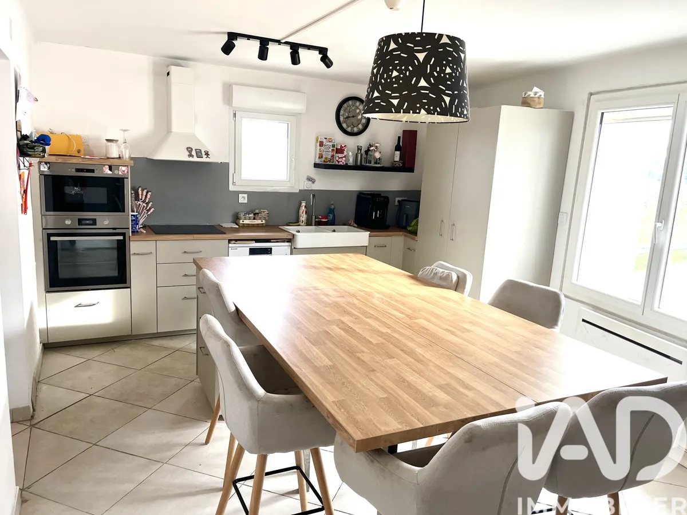

Maison

Caderousse (84860)
Maison de village — 4 pièces
Bâtie en 1900, entièrement rénovée. Terrain 566 m² plein sud avec puits, terrasse, suite parentale. Clim réversible. DPE C.
99,8 m²4 pièces3 ch.
Voir l'annonce